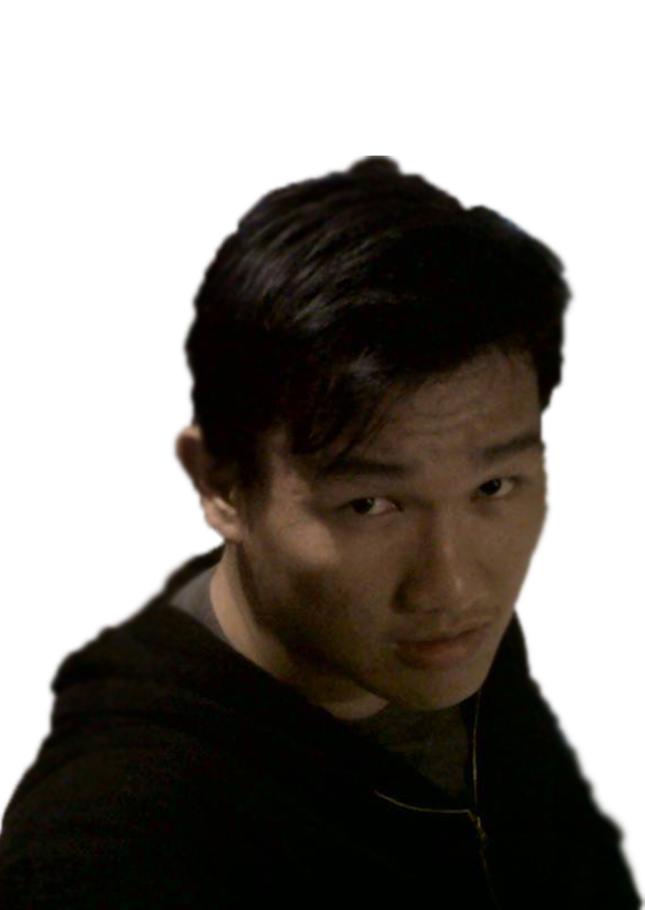

Pengembangan Diri
Hermanto
- 
- Lahir di Bagan siapi – api, Riau
- Lahir pada tanggal 06 November 1992
- Saat ini sedang bekerja di PT. Canang Indah Sebagai Staff IT
- Hoby saya bermain game dan mengeksporasi seputar tips & trik Komputer
- ---> Di Sini <---
Sutris Hendrawan
- 131113093
- Hobby Gaming
- Ti-C Sore
- link FB Gan >> Sutris <<
Achmad Dzaki
131113832
Ti-C Sore
zackzack9999@gmail.com
Jay Clarens
131113824
Hobby Gamers Dota2
Salah satu Player dota2 dari Team D'Generation saat Ideafuse Festifal Mikroskil MD2C
FB: Jay Clarens
Twitter: @anneJeee
Pin: 55BB3BA3
Jalan Menuju Sukses
Mengenal diri
Manfaat & tujuan mengenal diri
- Mengenal dirinya lebih jauh sehingga mengetahui peran yang harus diwujudkan
- Memahami potensi diri sehingga mengarahkan diri kepada tujuan hidup
- Mengetahui apa yang harus dikerjakan dan dikembangkan
- Winner's Attitude
Kepribadian
Sanguinis
- Cenderung ingin populer dan disenangi oleh orang
- Sulit berkonsentrasi
- Cenderung berpikir pendek
- Hidup serba tak teratur
- Meja kerja cenderung berantakan
- Kurang disiplin dengan waktu
- Sering lupa akan janji
Melankolis
- Memikirkan segalanya secara mendalam
- Cenderung menganalisa, memikirkan, dan mempertimbangkan
- Bicara hal yang benar-benar telah dipikirkan secara mendalam
- Serba teratur, rapi, terjadwal, tersusun, sesuai pola, serba sempurna
- Suka pada fakta-fakta, data-data, dan angka-angka
Koleris
- Suka mengatur orang lain
- Suka tunjuk-tunjuk dan perintah-perintah orang
- Perasan Boss, tidak mau kalah dan tidak banyak teman
- Senang tantangan dan bertualang
- Sangat “Goal Oriented”, kuat, tegas, cepat dan tangkap
Phlegmatis
- Tidak suka terjadi konflik
- Kedamaian adalah segala-galanya
- Berusaha mencari solusi yang damai
- Cenderung diam dan kalem
- Sabar dan mau menjadi pendengar yang baik
- Mengambil keputusan sering menunda-nunda
Talents
Kelebihan Potensi Diri yang melekat pada diri seseorang dan menjadi "Pembeda", dengan lainnya.
Talenta dapat dikelompokan menjadi 8, yaitu :
- 1. Verbal/Linguistik
- 2. Logis/Matematis
- 3. Visual
- 4. Kinestetik
- 5. Musikal
- 6. Interpersonal
- 7. Intrapersonal
- 8. Natualis
1. Verbal/linguistik.
Kemampuan untuk menggunakan bahasa atau kata-kata secara efektif.
2. Logis/Matematis
Kemampuan menggunakan angka-angka dan penalaran logika dengan baik, biasanya punya minat yang besar untuk bereksplorasi dan bertanya tentang berbagai fenomena serta menuntut jawaban logis.
3. Visual
Kemampuan berpikir 2 atau 3 dimensi, termasuk pemahaman akan bentuk dan ruang serta hubungan antar benda dalam ruangan, memiliki kepekaan akan arah atau lokasi tertentu.
4. Kinestetik.
Kemampuan untuk menggunakan gerak tubuh atau bergerak dengan ketepatan(presisi) tinggi dan mengekspresikan ide atau perasaan melalui gerakan tertentu.
5. Musikal.
Kemampuan untuk memahami, mengapresiasi, memainkan dan menciptakan musik serta memiliki kepekaan akan ritme, melodi atau nada.
6. Interpersonal.
Kemampuan untuk menjalin hubungan dengan orang lain, memahami kebutuhan dan perilaku orang lain, mengenali perasaan dengan jeli, berempati, bekerjasama.
7. Intrapersonal.
Kemampuan memahami, menganalisa, dan merefleksikan diri sendiri, mengenali kekuatan dan keterbatasan diri sendiri, serta menyadari perasaan, keinginan, harapan, dan tujuan hidup.
8. Naturalis.
Kemampuan untuk memahami alam sekitar,mengidentifikasi dan mengklasifikasikan persamaan dan perbedaan karakteristik spesies flora dan fauna, secara efektif berinteraksi dengan alam.
Langkah Mengenal Talenta
- Temukan dahulu apa sebenarnya talenta hidup kita. (Trial and Error)
- Teruslah Belajar(Keep Learning Keep Growing)
- Mentoring (Tol Kesuksesan)
- Bangun impian berdasarkan talenta kita (Pondasi Kuat)
- Miliki sikap yang benar terhadap kegagalan
Mindset and Opportunities about Entrepreneur
85% Orang Kaya di dunia bersumber dari bisnis dan berprofesi sebagai enterpreneur.
15% Orang yang berhasil kaya dari pilihan karier bekerja secara professional dan berhasil menjadi Top Eksekutif.
5% Orang kaya itu bersumber bukan dari dirinya, tetapi hibah warisan dari orang tuanya.
Pikiran Memperngaruhi Sikap
Ada 3 pembagian sikap menurut para ahli:
- Sikap memusuhi atau menyerang
- Sikap taat dan menerima
- Sikap tegas dan percaya diri
DR. William Moulton Marston (1928), lulusan Harvard University, mengembangkan Konsep DISC :
Dominance
Influence
Steadiness
Compliance
| Kebiasaan Buruk | Kebiasaan Baik | |
| Agresif | D | Ambisius |
| Bossy | Berkemauan kuat | |
| Penuntut | Tegas | |
| Egois | I | Antusias |
| Impulsif | Mudah bergaul | |
| Pendengar yang buruk | Persuasif | |
| Keras kepala | S | Konsisten |
| Lamban | Pendengar yang baik | |
| Sulit berubah | Sabar | |
| Pemilih | C | Hati-hati |
| Perfektionis | Rinci dan detail | |
| Suka keritik | Sistematis |
Dominance
(The Leader)
Kelebihan :
Memiliki motivasi yang kuat untuk sukses, memiliki daya juang yang tinggi dalam mencapai tujuan, risk taker, problem solver, self starter, high ego strength.
Kekurangan :
Agresif dalam kondisi tertentu, temperamental, tidak menyukai rutinitas, sulit mempercayai orang lain.
Dominance
Potensi Karir
Pengacara, Researcher, Perencana, Konsultan, Personalia, Produksi (Direktur, Manajer, Supervisor), Teknokrat, Trouble Shooter, Marketing Service, Konsultan, Insinyur (Direktur, Manajer, Supervisor) dan Wirausaha
Influence
(The Talker)
Kelebihan :
Sociable, optimistic, persuasive, trusting dan enthusiastic.
Kekurangan :
Impulsive, emotional, orientasi pada hasil, terkadang hanya ingin mendengar yang ingin dia dengarkan.
Influence
Potensi Karir :
Sales & Marketing (Direktur, Manajer dan Sales Person), Public Relations, Recruitment Consultant, Politisi, Wirausaha, Hotelier, Travel Agent, Trainer, Dosen, General Manager, memimpin orang, Pengacara, Public Speaker, Motivator
Steadiness
(The Peace Maker)
Kelebihan :
Sabar, pendengar yang baik, memiliki ketertarikan pada masalah dan perasaan orang sekitarnya. Pekerja yang stabil dengan konsentrasi yang kuat dan juga mampu menyelesaikan pekerjaan hingga tuntas.
Kekurangan :
Sulit berubah dan menghindari konflik.
Steadiness
Potensi Karir :
Pekerjaan Administrasi, Engineering dan Produksi (Sales, Service, Project, Draughtsman, Designer, Operative), Akunting, Research & Development, Tele-Sales, Tele-Marketing.
Compliance
(The Thinker)
Kelebihan :
Patuh pada peraturan, akurat, sistematis, selalu mencari fakta, memiliki daya analitikal yang cukup tinggi, mementingkan adat dan etika.
Kekurangan :
Kurang memiliki ambisi. Terlalu kaku mengikuti prosedur dan peraturan. Cenderung menyerah jika menemui konflik, sulit bekerja di bawah tekanan, kurang dapat menyelesaikan konflik (cenderung menghindar).
Compliance
Potensi Karir :
Planner (Perencana pada semua bidang), Insinyur (Instalatir, Teknisi), Peneliti teknis (ahli kimia), Akademisi, Ahli Statistik, Quality Controller, Ahli Matematika, Ahli Food Technology, Ahli Bio Teknologi.
Kepribadian Negatif :
1.Keyakinan dan bayangan negatif
2.Menolak perubahan
3.Tidak berperan aktif menyelesaikan masalah
4.Selalu mengeluh,mencela,dan melihat sisi negatif darisegala sesuatu
5.Selalu merasa frustasi,sendiri,dan gagal
6.Hasil kerja dan pencapaian individunya menjadi lemah
7.Senang menyendiri dan tidak mampu bersosialisasi hingga tidak punya sahabat
8.Sangat mungkin terserang penyakit jiwa
9.Ragu,emosional,dengki,dan benci
Kepribadian Positif
- Berpikir positif untuk menguatkan cara pandang
- Berpikir positif karena pengaruh orang lain
- Berpikir positif karena momen tertentu
- Berpikir positif saat mengahadapi kesulitan
- Selalu berpikir positif
Self Acceptance
Menerima Diri
- Setelah mengenal diri dengan baik, tahap berikutnya adalah mampukah kita menerima diri kita sebagaimana adanya, dan selanjutnya mengembangkannya.
- Menerima diri bukan suatu hal yang mudah, apalagi kalau kita selalu merasa diri tidak berharga.
- Kita harus menyadari apa pentingnya menerima diri,kemudian melihat apa bahayanya menolak diri, bagaimana menghargai diri kemudian setelah berhasil menerima diri kita akan bisa menjadi diri sendiri.
Cara Menerima Diri
- 1. Gunakan Konsep Paradigma Baru.
- 2. Tetapkan standar atau target yang realistis.
- 3. Lakukan sesuatu yang membuat Anda lebih menyukai diri Anda.
- 4. Beri pujian pada orang lain darn diri sendiri.
- 5. Gunakan kata – kata yang positif pada diri sendiri.
- 6. Bersyukurlah dnegan apa yang Anda miliki.
- 7. Galilah Potensi Diri.
- 8. Luangkanlah waktu bersama denga orang lain.
- 9. Membaca
5 Dasar Kecerdasan Emosional
- Kecerdasan Diri --> Kesadaran diri (Self Awareness) atau kemampuan memahami perasaan diri sendiri.
- Pengaturan Diri --> Kemampuan mengatur emosi dan dorongan-dorongan diri sendiri.
- Motivasi --> Kemampuan Memotivasi Diri.
- Empati --> Kemampuan MERASAKAN perasaan orang lain.
- Keterampilan Sosial --> Kemampuan MENGATUR perasaan orang lain.
Langkah Pengendalian Diri
- 1. Kesadaran
- 2. Analisis
- 3. Kesungguhan Diri menghadapi Tantangan
- 4. Strategi
- 5. Evalusi
Individu yang memiliki kontrol diri
- 1. Optimisme
- 2. Energi yang bekerja membentuk format hidup,berupa Energi Positif
- 3. Lebih cepat menyelesaikan masalah
- 4. Mencoba mengontrol emosinya
Individu tanpa Kontrol Diri
- 1. Kehilangan Optimisme
- 2. Energi yang bekerja membentuk Format hidup, berupa Energi Negatif.
- 3. Keyakinan bahwa Tantangan yang dihadapi lebih besar daripada kemampuan yang dimiliki.
- 4. Lebih banyak masalah daripada solusi.
- 5. Keterbatasan / kelemahan pemahaman lebih berkuasa dari pada keunggulan.
Winner Attitude
- Sukses dimulai sebagai sebuah Sikap Orang - Orang Sukses berpikir sebagai Pemenang
- Sukses memiliki banyak arti
- sukses berawal dari kegagalan.
Penentu Kesuksesan atau Kegagalan :
- 1. Sikap Mereka
- 2. Tingkah laku Mereka
- 3. Hasil yang Mereka capai
5 Sikap Pemenang
- 1. Always Be Excited (Selalu Bersemangat)
- 2. Always Think Possitive (Selalu Berpikiran Positif)
- 3. Always Be Up (Selalu Bangkit)
- 4. Stop Make Excuse (Berhenti Membuat Alasan)
- 5. Full Commitment (Komitmen Sepenuh Hati)
Winner`s Behavior
Winner`s Behavior ---> Orang yang [Self Made]
Konsep Winner`s Behavior yakni PASS
- P : Professional
- A : Adaptif (Menyesuaikan Diri)
- S : Synergy (Kolaborasi atau Kerjasama)
- S : Spirit(Semangat)
Prinsip Winner's Behavior
- 1. Disiplin
- 2. Fokus
- 3. Ketekunan
- 4. Kepemilikan (Hak dan Impian)
- 5. Egoisme(Waktu dan Efisiensi)
- 5. Orientasi Hasil
Behavior yang mempengaruhi Kesuksesan
- 1. Inisiatif
- 2. Selalu Bertumbuh
- 3. Berprasangka Baik
- 4. Mengubah Kelemahan Menjadi Kekuatan
Behavior Minus yang menghancurkan Kesuksesan
- 1. Sombong
- 2. Tidak Bertanggung jawab
- 3. Sulit bekerja dalam Tim
- 4. Malas Bertanya
- 5. Komentar Destruktif (Sindiran)
- 6. Melebih-lebihkan Kemampuan
- 7. Tidak Tepat Janji